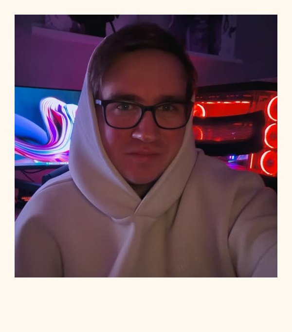

1PinboardPinnwand
From the screen into ITVom Bildschirm in die IT
My way into IT didn't start at the server, but at a user's screen. Now I'm looking for an apprenticeship as an IT specialist. Mein Weg in die IT begann nicht am Server, sondern am Bildschirm eines Nutzers. Jetzt suche ich einen Ausbildungsplatz als Fachinformatiker.

My way into IT didn't start at the server, but at a user's screen. As a UX/UI designer I learned how people work with software and what they need from it. Mein Weg in die IT begann nicht am Server, sondern am Bildschirm eines Nutzers. Als UX/UI-Designer habe ich gelernt, wie Menschen mit Software arbeiten und was sie dafür brauchen.
Since December 2025 I've been taking the step into IT, and I'm looking for an apprenticeship as an IT specialist. Seit Dezember 2025 gehe ich den Schritt in die IT und suche einen Ausbildungsplatz als Fachinformatiker.
The photo from the pinboard: that's me.Das Foto von der Pinnwand: das bin ich.